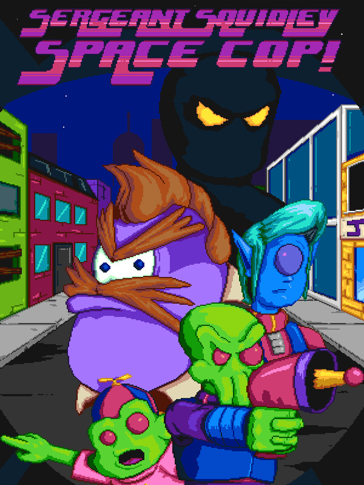

Sergeant Squidley: Space Cop!
Sergeant Squidley: Space Cop!
Details
|  | |
| Playtime | 2h 16m 0s |
| Last Activity | 2023-07-15 0:03:08 |
| Added | 2023-08-11 0:29:07 |
| Modified | 2025-10-02 9:54:53 |
| Completion Status | Played |
| Library | Steam |
| Source | Steam |
| Platform | PC (Windows) |
| Release Date | 2023-07-04 |
| Community Score | |
| Critic Score | |
| User Score | |
| Genre | Adventure Point-and-click Role-playing (RPG) Visual Novel |
| Developer | Ninjaconor |
| Publisher | Ninjaconor |
| Feature | Single Player |
| Links | Steam Discord |
| Tag | 8-bit Music Adventure Character Customization Choices Matter Choose Your Own Adventure Detective Exploration Interactive Fiction Multiple Endings Nonlinear Old School Pixel Graphics Point & Click Retro RPG Singleplayer Space Story Rich Surreal Time Management |
Description
The best cop in town has been murdered, and there's only one man who can solve the case: Sergeant Squidley, Space Cop!
Hastily promoted from traffic duty, Squidley must use all his Strength, Investigation, and Handiness as he travels around Moontropolis searching for evidence to solve the case. But there are stronger forces than just the criminal underworld at play: an ex-wife who hates him, a young son to take care of, and a dark secret held by pretty much everyone in town.

A decision-based RPG that lets you steer the story as you wish! Want to be a dutiful police officer? Or maybe you want to indulge your criminal side? Perhaps you want to ignore policework altogether and work on your side-hustle as a jazz saxophonist? Or take a few days off to reconnect with your estranged son? There are hundreds of choices to make, from the heartfelt, to the ridiculous, to the downright nasty, and each of them impacts how the story unfolds.

Sergeant Sqiudley is a love letter to the text-based DOS games of the late 80s and early 90s. You’ll guide Squidley around the city of Moontropolis, making decisions that impact the direction of the story. Follow the plot as intended, or go off on any number of tantalizing tangents, derailing the narrative to all sorts of wacky ends.
The objective of the game is to solve the murder of Detective Dex Beeglor, and Squidley has one week to complete this task. But there are so many things to do around the city, it's going to be impossible to fit them all in. Investigate the crime scene, interview the victim's family, and ask around town to identify suspects… or don’t. You're completely free to ignore the case, and simply live out a week in Squidley's shoes.

Moontropolis is a bustling city, with dozens of characters to encounter, each with their own personality, daily schedule, and opinion about our intrepid investigator. Will you become everyone’s best friend, or make a lot of enemies? That’s for you to decide.
As a freshly divorced man, Squidley can also pursue romantic relationships via the dating app Flintr, where you can set up dates with anyone you meet on your travels.
You’ll also need to balance your core stats of Strength, Investigation and Handiness, while keeping Squidley rested and well-fed, lest his abilities and health begin to wane. Sergeant Squidley is a true detective sandbox, with hundreds of decisions to make and countless potential paths to follow. How will you spend your week in the shoes of Sergeant Squidley?
Hastily promoted from traffic duty, Squidley must use all his Strength, Investigation, and Handiness as he travels around Moontropolis searching for evidence to solve the case. But there are stronger forces than just the criminal underworld at play: an ex-wife who hates him, a young son to take care of, and a dark secret held by pretty much everyone in town.
A decision-based RPG that lets you steer the story as you wish! Want to be a dutiful police officer? Or maybe you want to indulge your criminal side? Perhaps you want to ignore policework altogether and work on your side-hustle as a jazz saxophonist? Or take a few days off to reconnect with your estranged son? There are hundreds of choices to make, from the heartfelt, to the ridiculous, to the downright nasty, and each of them impacts how the story unfolds.
Sergeant Sqiudley is a love letter to the text-based DOS games of the late 80s and early 90s. You’ll guide Squidley around the city of Moontropolis, making decisions that impact the direction of the story. Follow the plot as intended, or go off on any number of tantalizing tangents, derailing the narrative to all sorts of wacky ends.
The objective of the game is to solve the murder of Detective Dex Beeglor, and Squidley has one week to complete this task. But there are so many things to do around the city, it's going to be impossible to fit them all in. Investigate the crime scene, interview the victim's family, and ask around town to identify suspects… or don’t. You're completely free to ignore the case, and simply live out a week in Squidley's shoes.
Moontropolis is a bustling city, with dozens of characters to encounter, each with their own personality, daily schedule, and opinion about our intrepid investigator. Will you become everyone’s best friend, or make a lot of enemies? That’s for you to decide.
As a freshly divorced man, Squidley can also pursue romantic relationships via the dating app Flintr, where you can set up dates with anyone you meet on your travels.
You’ll also need to balance your core stats of Strength, Investigation and Handiness, while keeping Squidley rested and well-fed, lest his abilities and health begin to wane. Sergeant Squidley is a true detective sandbox, with hundreds of decisions to make and countless potential paths to follow. How will you spend your week in the shoes of Sergeant Squidley?